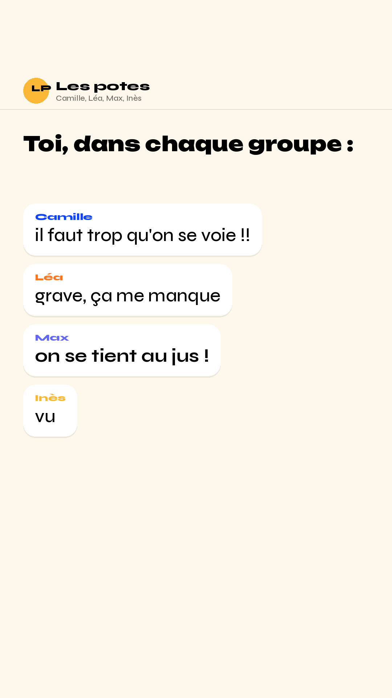
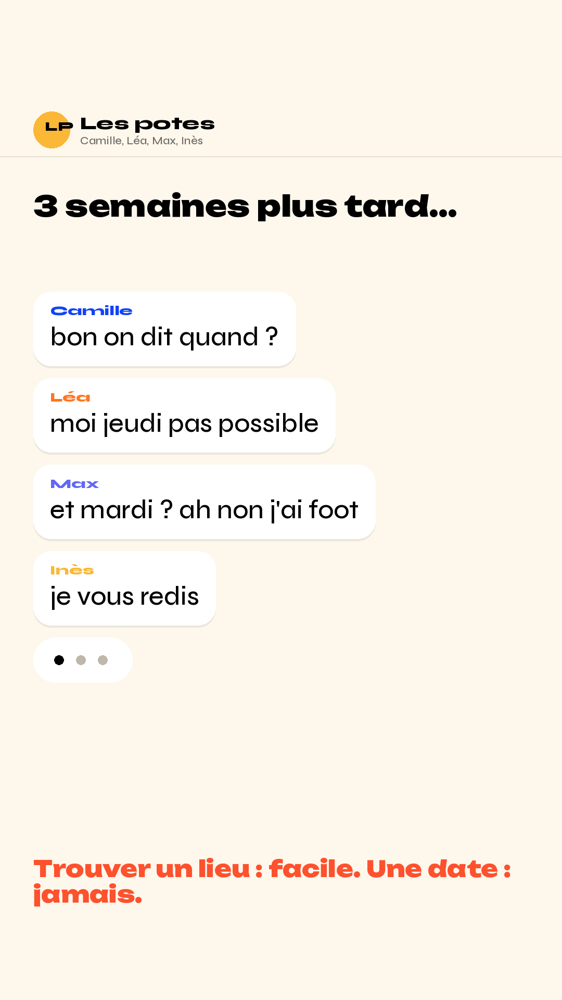
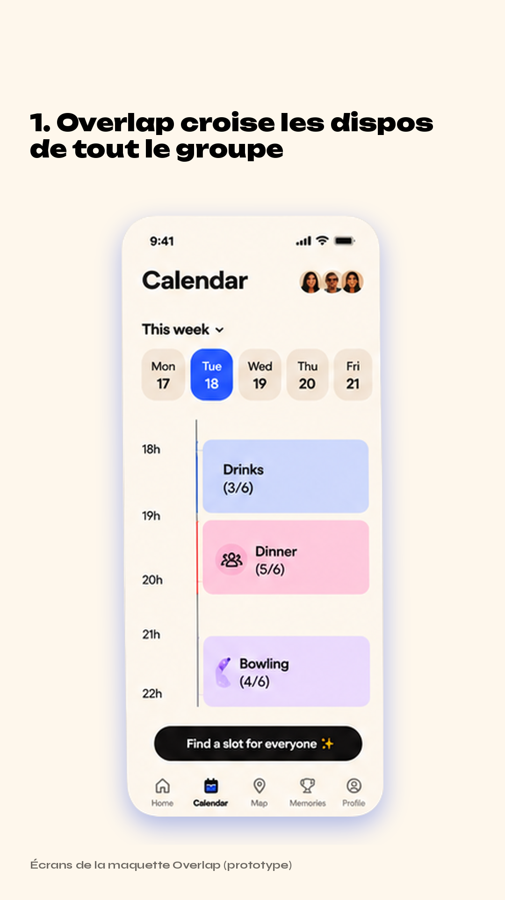
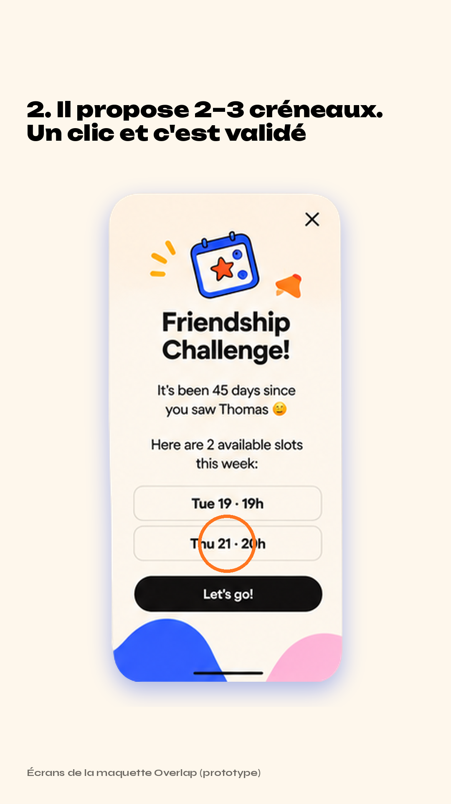
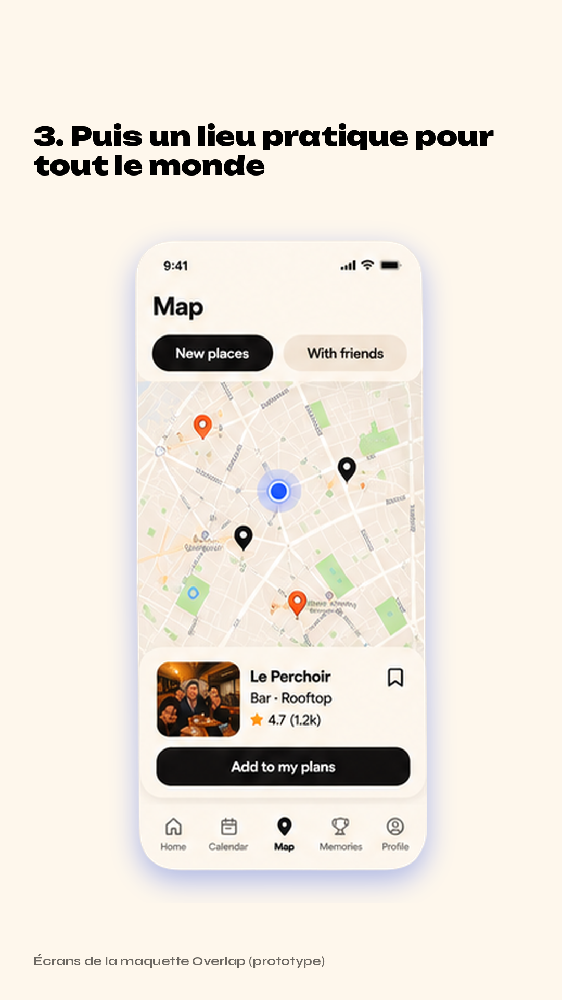
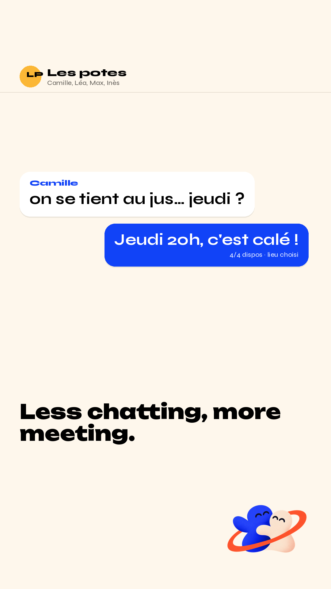
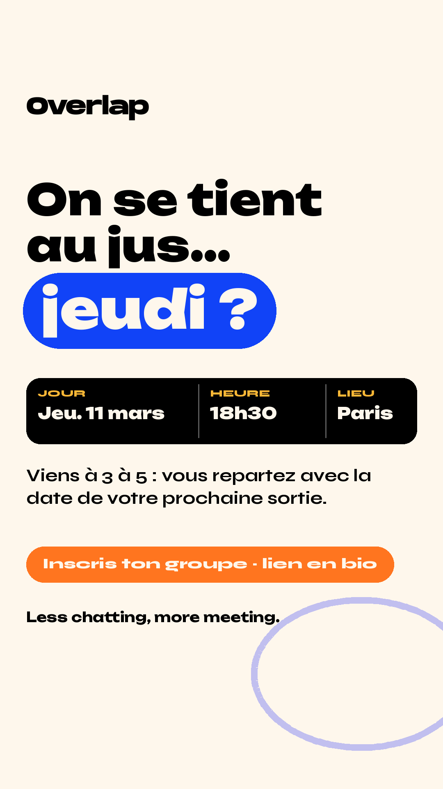

Reel / TikTok 15 s — « On se tient au jus… jeudi ? »
Rôle : faire reconnaître la situation (le « on se tient au jus » qui ne débouche sur rien) puis montrer le bénéfice dans l'ordre du projet : créneau d'abord, lieu ensuite. 1080×1920, 30 i/s, sons de notification, sous-titres incrustés (lecture sans le son). Fichier : Reel_On_se_tient_au_jus_jeudi_15s_1080x1920.mp4

PLAN 1 · 0,0–3,6 s
Scène de groupe
Bulles qui tombent : « il faut trop qu'on se voie !! » / « grave, ça me manque » / « on se tient au jus ! » / « vu ».
Texte écran : Toi, dans chaque groupe :

PLAN 2 · 3,6–6,2 s
Le décalage
« bon on dit quand ? » / « moi jeudi pas possible » / « et mardi ? ah non j'ai foot » / « je vous redis » + points de saisie.
Texte écran : 3 semaines plus tard… / Trouver un lieu : facile. Une date : jamais.

PLAN 3 · 6,2–7,8 s
Démo 1 · créneau
Écran réel Calendar de la maquette.
Texte écran : 1. Overlap croise les dispos de tout le groupe

PLAN 4 · 7,8–9,4 s
Démo 2 · validation
Écran réel Friendship Challenge, tap sur « Thu 21 · 20h ».
Texte écran : 2. Il propose 2–3 créneaux. Un clic et c'est validé

PLAN 5 · 9,4–10,9 s
Démo 3 · lieu
Écran réel Map : lieux pratiques pour le groupe.
Texte écran : 3. Puis un lieu pratique pour tout le monde

PLAN 6 · 10,9–12,8 s
La chute
« on se tient au jus… jeudi ? » → « Jeudi 20h, c'est calé ! » (4/4 dispos).
Texte écran : Less chatting, more meeting.

PLAN 7 · 12,8–15,0 s
CTA
Carton final : date de l'événement + bouton.
Texte écran : Jeu. 11 mars · 18h30 · Paris — Inscris ton groupe · lien en bio
Version tournée (optionnelle, même minutage) — Plans 1–2 : 4 amis filmés chacun chez soi / dans le métro, téléphone en main, on voit la bulle arriver ; plan 6 : les 4 se retrouvent à une table, Camille pose le téléphone « c'est calé ». Matériel : 2 smartphones, montage CapCut, 1 demi-journée (Opale + Francesca). Les plans 3–5 restent les écrans de la maquette.
Légende Instagram/TikTok : « On se tient au jus » = on ne se reverra jamais 🫠 Overlap trouve le créneau commun de ton groupe, puis le lieu pratique. Viens le tester avec ta bande le jeudi 11 mars 2027 à Paris (gratuit, inscription par groupe, lien en bio). #onsetientaujus #overlap
Limite : les écrans proviennent des maquettes en basse définition du Canva ; les remplacer par des exports haute définition s'ils existent.